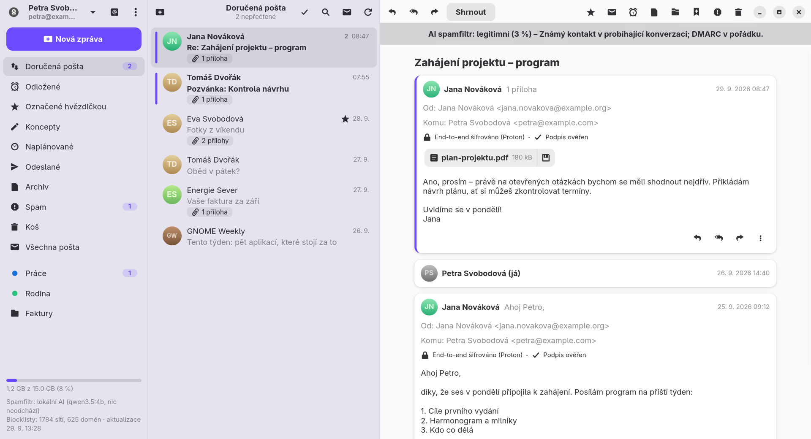

Klient
E-mailový klient pro GNOME s nativní podporou Proton Mailu, PGP šifrováním a spamfiltrem řízeným umělou inteligencí – v cloudu i přímo v počítači.
Přehled

KLIENT_DEMO=1 klient.Klient je desktopová poštovní aplikace pro Linux s prostředím GNOME. Připojuje se přímo k Proton Mailu (bez Proton Bridge) i ke klasickým schránkám přes IMAP a SMTP. Každou novou zprávu nejdřív posoudí spamfiltr a teprve potom ji ukáže a ohlásí.
Více služeb v jednom okně
Proton Mail, Gmail, Seznam.cz a libovolná IMAP/SMTP schránka, přepínání v postranním panelu.
Šifrování všude
End-to-end šifrování Protonu a PGP/MIME pro ostatní služby, automatické hledání klíčů příjemců.
Spamfiltr s AI
SPF/DKIM/DMARC, blocklisty a vaše seznamy jako podklady pro rozhodnutí AI.
AI asistent
Shrnutí, návrhy odpovědí, „Zeptat se pošty“, třídění do štítků a ranní přehled.
Lokální AI
Model běží v počítači přes spravovanou Ollamu – obsah zpráv nikam neodchází.
Pohodlné odesílání
Zpoždění s tlačítkem Zpět, naplánované odeslání, formátovaný editor, přílohy.
Instalace
Z GitHubu
Na Fedoře (44 a novější) nainstalujete nejnovější verzi jedním příkazem přímo z GitHubu:
sudo dnf install https://github.com/Imbecile6197/klient/releases/latest/download/klient.x86_64.rpmNa Ubuntu (26.04 LTS a novější) balíček stáhněte a nainstalujte:
wget https://github.com/Imbecile6197/klient/releases/latest/download/klient_amd64.deb
sudo apt install ./klient_amd64.debDalší verze si Klient stáhne sám – viz Automatické aktualizace.
Tuto dokumentaci otevřete kdykoli z Klienta: hlavní nabídka → Nápověda nebo klávesa F1.
Jazyk
Klient mluví česky a anglicky. Jazyk se řídí nastavením systému; změnit ho jde v Předvolbách → Obecné → Jazyk rozhraní a projeví se po restartu. Stejným jazykem odpovídá i AI – shrnutí, návrhy odpovědí, „Zeptat se pošty“ a zdůvodnění spamfiltru.
Balíček doporučuje rozšíření gnome-shell-extension-appindicator, bez kterého GNOME nezobrazí ikonu v horní liště.
Automatické aktualizace
Klient jednou denně zkontroluje vydání na GitHubu (ne na měřeném připojení). Novou verzi na pozadí stáhne a ověří kontrolním součtem SHA-256 – musí souhlasit se souborem SHA256SUMS i s otiskem, který uvádí GitHub. Pak přijde oznámení Je připravená nová verze Klienta; tlačítko Nainstalovat si vyžádá heslo správce, balíček nainstaluje a Klient se sám restartuje. Tlačítko Co je nového ukáže změny ještě před instalací.
Po aktualizaci Klient ukáže, co se změnilo od verze, kterou jste používali naposledy. Seznam kdykoli znovu otevřete z hlavní nabídky → Co je nového.
Kontrolu jde vypnout nebo spustit ručně v Předvolbách → Obecné → Aktualizace. Klient sestavený ze zdrojového kódu novou verzi jen ohlásí.
Pokud Klient při ruční instalaci nové verze běží (třeba na pozadí), do minuty to pozná a nabídne restart. Nemusíte ho hledat a ukončovat ručně.
Sestavení ze zdrojového kódu
sudo dnf install golang gcc gtk4-devel libadwaita-devel gobject-introspection-devel webkitgtk6.0-devel
make build # první sestavení trvá dlouho (CGo bindingy GTK)
make run
make install # do ~/.local včetně .desktop souboru a ikony
make rpm VERSION=0.7.3
packaging/deb.sh 0.7.3 # balíček pro Ubuntu, sestaví se v kontejneru podmanÚčty a služby
První účet přidáte na přihlašovací obrazovce, další v postranním panelu přes přepínač účtů → Přidat účet. Nová pošta, spamfiltr a oznámení fungují pro všechny účty současně, i pro ty, které právě nemáte otevřené.
Proton Mail
Přihlášení přímo přes Proton API včetně dvoufázového ověření a režimu dvou hesel. Heslo se neukládá – v klíčence GNOME zůstane jen token relace a odvozený klíč pro odemčení schránky.
Gmail
- V účtu Google zapněte dvoufázové ověření (bez něj Google hesla pro aplikace nenabízí).
- Vytvořte heslo pro aplikace – tlačítko v přihlašovacím okně Klienta otevře přímo myaccount.google.com/apppasswords.
- V nastavení Gmailu musí být povolený IMAP.
- V Klientovi zvolte Jiná služba → Gmail a zadejte adresu a heslo pro aplikace.
Štítky Gmailu se chovají jako na webu: přidání štítku zprávu jen označí (zůstane v doručené poště), odebrání sundá jen štítek. Archivace přesune zprávu do „Všech zpráv“, složka „S hvězdičkou“ odpovídá hvězdičce a složka „Důležité“ je skrytá.
Seznam.cz
Podporované domény: seznam.cz, email.cz, post.cz, spoluzaci.cz a vlastní domény vedené na Seznamu. Máte-li zapnuté dvoufázové ověření, vytvořte si v nastavení účtu Seznam heslo pro aplikace a přihlaste se jím.
Jiná schránka (IMAP/SMTP)
Klient servery dohledá sám – podle známých poskytovatelů, databáze Thunderbirdu (ISPDB) a MX záznamů domény. Pokud se to nepovede, zadáte je ručně. Při chybě přihlášení se ukáže celé hlášení serveru.
Co která služba umí
| Funkce | Proton | Gmail | Seznam / IMAP |
|---|---|---|---|
| Nová pošta okamžitě | ano | IMAP IDLE | IMAP IDLE |
| Složky | ano | ano | ano |
| Štítky | ano | ano | ne |
| Vlákna | server | References | References |
| Hledání v textu zpráv | ne | ano | ano |
| Odložení konverzace | server | Klient | Klient |
| Naplánované odeslání | server | Klient | Klient |
| Šifrování | E2E Protonu | PGP/MIME | PGP/MIME |
| Kontakty pro našeptávání | kontakty Protonu | nedávné adresy | nedávné adresy |
| Automatická odpověď | placený tarif | ne | ne |
| Zaplnění schránky | ano | kvóta | kvóta nebo jen obsazeno |
„Klient“ znamená, že funkci obstarává sama aplikace přes složky Odložené a Naplánované na serveru. Funguje, když Klient běží (stačí na pozadí); co se mezitím zmeškalo, provede hned po spuštění.
Čtení pošty
- Trojpanelové rozvržení (složky – seznam – zpráva), které se na úzkém okně přizpůsobí.
- Vlákna – zprávy se seskupují do konverzací; starší zprávy vlákna se u Protonu dešifrují až po rozbalení. Vypnout jde v Předvolbách → Zprávy.
- HTML zprávy se zobrazují přes WebKitGTK bez JavaScriptu. Vzdálené obrázky a sledovací pixely jsou blokované; povolit je jde pro jednu zprávu nebo natrvalo pro odesílatele.
- Přílohy jsou jako čipy nahoře ve zprávě – kliknutí přílohu otevře, šipka ji uloží.
- Hledání (Ctrl+F) – u Protonu v předmětu, odesílateli a příjemcích, u IMAP služeb i v textu zpráv.
- Offline čtení – posledních 500 zpráv (nastavitelné) se ukládá do šifrované cache (AES-256-GCM, klíč v klíčence; těla Proton zpráv navíc zůstávají zašifrovaná PGP).
- Ukazatel zaplnění schránky vlevo dole. Když server limit neuvádí (Seznam), ukáže se aspoň obsazené místo.
- Odhlásit odběr – u hromadných zpráv tlačítko jedním kliknutím (RFC 8058).
- Tisk a export zprávy do souboru
.eml.
Psaní a odesílání
- Formátovaný editor – tučné, kurzíva, podtržení, seznamy, odkazy. Příjemci s PGP dostanou textovou verzi.
- Odpovědět, odpovědět všem, přeposlat (i s přílohami).
- Přílohy až do 25 MB – šifrují se stejně jako text. Soubory jde do zprávy přetáhnout myší.
- Koncepty se uloží automaticky při zavření okna (Esc) nebo ručně Ctrl+S.
- Podpis a našeptávání adres z kontaktů.
- Výchozí aplikace pro odkazy
mailto:– nastavíte v Předvolbách → Obecné.
Zpoždění odeslání
Po odeslání zpráva ještě chvíli počká (výchozí 10 s) a v oznámení běží odpočet s tlačítkem Zpět. Délku nastavíte v Předvolbách → Zprávy.
Naplánované odeslání
Šipka u tlačítka Odeslat nabídne předvolby (zítra ráno, zítra odpoledne, příští týden) nebo vlastní datum a čas. U Protonu zprávu odešle server i při vypnutém počítači, u ostatních služeb ji odešle Klient. Naplánované zprávy mají v zobrazení pruh s odpočtem a tlačítkem pro zrušení.
Organizace pošty
- Složky a štítky – vlastní složky a štítky Protonu, složky IMAP a štítky Gmailu. Zprávy jde do složek a na štítky přetáhnout.
- Hvězdička, nepřečtené, archiv, koš.
- Hromadný výběr – tlačítkem, Ctrl/Shift+klik nebo Ctrl+A.
- Odložení (Ctrl+H) – konverzace zmizí a v zadaný čas se vrátí do doručené pošty.
Pravidla pro příchozí poštu
V Předvolbách → Pravidla vytvoříte pravidla typu „když Odesílatel / Příjemce / Předmět obsahuje text, pak…“ s akcemi přesunout do složky, přidat štítek, označit jako přečtené nebo přidat hvězdičku. Pravidla se použijí na novou poštu po kontrole spamfiltrem; položkou nabídky Použít pravidla na doručenou poštu je spustíte i nad stávající poštou.
Šifrování a PGP
Proton Mail
Každá zpráva se dešifruje a ověří se podpis. Při odesílání se pro každého příjemce zvolí nejsilnější dostupná ochrana:
- Proton adresy – end-to-end šifrování Protonu,
- externí adresy se známým klíčem (WKD nebo importovaným) – PGP,
- ostatní – nešifrovaně, volitelně s PGP podpisem, a před odesláním se ukáže varování.
Gmail, Seznam a IMAP
V Předvolbách → PGP si pro účet vytvoříte nový klíč nebo naimportujete svůj soukromý klíč. Klíč je v souboru zamčený náhodným heslem uloženým v klíčence. Potom:
- zprávy lidem se známým klíčem se šifrují ve formátu PGP/MIME, ostatním se podepisují,
- smíšeným příjemcům odejdou dvě verze – šifrovaná a podepsaná,
- koncepty, naplánované zprávy a kopie v Odeslaných se na serveru ukládají zašifrované jen pro vás,
- příchozí PGP/MIME zprávy se dešifrují a ověří,
- klíč jde zálohovat i odstranit.
Kde Klient hledá klíče příjemců
- Web Key Directory domény příjemce,
- hlavička Autocrypt v přijatých zprávách (Klient ji do svých zpráv také přidává),
- ručně importované klíče – i přímo z přílohy
.asctlačítkem ve zprávě, - volitelně keys.openpgp.org (Předvolby → PGP).
Do odchozích zpráv jde automaticky přikládat vlastní veřejný klíč (Předvolby → Zprávy).
Spamfiltr
Každou novou zprávu v doručené poště posoudí AI. Jako podklady dostane:
- výsledky SPF, DKIM a DMARC,
- značky Protonu,
- zásahy IP adres, domén a odkazů v blocklistech,
- vaše seznamy povolených a blokovaných odesílatelů.
Zpráva s pravděpodobností spamu nad prahem (výchozí 0,7) se přesune do Spamu. Práh nastavíte v Předvolbách → Spamfiltr.
Nejdřív kontrola, pak oznámení
Platí pro všechny služby. Nahoře v seznamu je během kontroly vidět pruh „Kontroluje se N nových zpráv…“. Kdyby se kontrola zasekla, zpráva se ukáže nejpozději po 6 minutách. Chování jde vypnout přepínačem Zobrazovat novou poštu až po kontrole.
Blocklisty
Stahují se automaticky každých 12 hodin: Spamhaus DROP (IPv4 a IPv6), URLhaus a OpenPhish. Stav je v Předvolbách → Spamfiltr.
Prověření stávající pošty
Položka nabídky Prověřit doručenou poštu pomocí AI spustí filtr nad posledními 50 zprávami.
Když AI filtr vypnete, Klient pozná spam jen podle blocklistů a vašich seznamů.
AI asistent
Funkce
- Shrnutí zprávy a návrh odpovědi.
- Úprava a překlad konceptu přímo v editoru.
- Zeptat se pošty (Ctrl+J) – otázka v běžné řeči; AI najde související zprávy a odpoví s odkazy na zdroje.
- Třídění do štítků – nová pošta dostane vhodný štítek (Předvolby → AI → Automatické funkce).
- Ranní přehled nepřečtené pošty v nastavenou hodinu (výchozí 7:00); kdykoli ho vyvoláte položkou Přehled nepřečtené pošty (AI).
Poskytovatelé
Asistent a spamfiltr mají každý svého poskytovatele a model – spamfiltru obvykle stačí levnější a rychlejší model. Tlačítko se seznamem u modelu nabídne modely dostupné pro váš účet.
| Poskytovatel | Výchozí model asistenta | Výchozí model spamfiltru | Klíč |
|---|---|---|---|
| Claude (Anthropic) | claude-opus-5 | claude-opus-5 | platform.claude.com |
| ChatGPT (OpenAI) | gpt-5.5 | gpt-5.4-mini | platform.openai.com |
| Gemini (Google) | gemini-3.1-pro-preview | gemini-3-flash-preview | aistudio.google.com |
| Mistral (servery v EU) | mistral-medium-latest | mistral-small-latest | console.mistral.ai |
| Lokální AI (Ollama) | qwen3.5:4b | qwen3.5:4b | není potřeba |
API klíče se ukládají do klíčenky systému. Když poskytovatel vrátí chybu (chybějící kredit, neplatný klíč, zrušený model), Klient ji srozumitelně vysvětlí a nabídne odkaz, kde ji opravit.
Lokální AI
S lokální AI běží model přímo v počítači a obsah zpráv nikam neodchází. Nastavení je v Předvolbách → AI → Lokální AI (Ollama).
- Nainstalovat Ollamu – Klient stáhne oficiální verzi z GitHubu, ověří kontrolní součet a rozbalí jen část pro procesor do
~/.local/share/klient/ollama. Nepotřebuje sudo. - Porovnat modely na mé poště – každý vybraný model posoudí několik vašich zpráv a jednu shrne; uvidíte rychlost i kvalitu vedle sebe. Vše běží v počítači.
- V rolích Asistent a Spamfiltr zvolte Lokální AI a vybraný model.
Nabízené modely
| Model | Stažení | Poznámka |
|---|---|---|
| Qwen 3.5 4B (Alibaba) | 3,4 GB | výchozí |
| Gemma 4 E2B (Google) | 4,3 GB | |
| Gemma 4 E4B (Google) | 6,1 GB | lepší čeština, víc paměti |
| Ministral 3 3B (Mistral AI) | 3,0 GB | |
| Ministral 3 8B (Mistral AI) | 6,0 GB | chytřejší, pomalejší |
Další možnosti
- Jen lokálně – nic se neposílá cloudové AI, i když jsou uložené klíče.
- Automaticky aktualizovat – jednou denně zkontroluje novou verzi Ollamy a modelů (ne na měřeném připojení).
- Připravovat shrnutí předem – nová pošta se shrne na pozadí, jen při napájení ze sítě a když model nic jiného nedělá. Po otevření zprávy je shrnutí hned.
- Výsledky AI se ukládají do cache, takže opakované shrnutí stejné zprávy je okamžité. Při napájení ze sítě zůstává model načtený v paměti 30 minut, na baterii 5 minut.
Bez grafické karty je lokální model pomalý: posouzení jedné zprávy trvá desítky sekund (na notebooku s procesorem Intel i5 10. generace zhruba minutu u modelu Qwen 3.5 4B).
Pozvánky a nepřítomnost
Pozvánky do kalendáře
Zpráva s pozvánkou (.ics) ukáže kartu s termínem a místem. Tlačítka Přijmout, Možná a Odmítnout pošlou organizátorovi odpověď; událost jde přidat do kalendáře.
Automatická odpověď
Pouze Proton Mail s placeným tarifem. Odpovídá server, i když je počítač vypnutý; každý odesílatel dostane odpověď nejvýš jednou za čas. Nastavíte předmět, text a volitelně poslední den platnosti.
Běh na pozadí
- Po zavření okna Klient běží dál, hlídá novou poštu a ukazuje černobílou ikonu v horní liště (GNOME potřebuje rozšíření AppIndicator). Červená tečka na ikoně znamená nepřečtenou poštu. Nabídka ikony obsahuje Otevřít Klient, Nová zpráva a Ukončit; ukončit ho můžete také klávesami Ctrl+Q.
- Spouštět po přihlášení – Klient se spustí rovnou na pozadí.
- Obojí zapnete nebo vypnete v Předvolbách → Obecné → Na pozadí.
- Oznámení o nové poště přijde až po kontrole spamfiltrem.
Klávesové zkratky
Přehled je i přímo v aplikaci: Ctrl+?.
| Zkratka | Akce |
|---|---|
| Obecné | |
| Ctrl+N | Nová zpráva |
| Ctrl+F | Hledat |
| Ctrl+J | Zeptat se pošty (AI) |
| Ctrl+Shift+K | Kontakty |
| F5 | Obnovit |
| Ctrl+, | Předvolby |
| F1 | Nápověda (tato dokumentace) |
| Ctrl+? | Klávesové zkratky |
| Ctrl+Q | Ukončit |
| Zprávy | |
| Ctrl+R | Odpovědět |
| Ctrl+Shift+R | Odpovědět všem |
| Ctrl+L | Přeposlat |
| Ctrl+E | Archivovat |
| Delete | Do koše |
| Ctrl+D | Hvězdička |
| Ctrl+H | Odložit |
| Ctrl+Shift+U | Označit jako nepřečtené |
| Seznam zpráv | |
| Ctrl+A | Vybrat všechny zprávy |
| Esc | Zrušit výběr |
| Psaní zprávy | |
| Ctrl+Enter | Odeslat |
| Ctrl+S | Uložit koncept |
| Ctrl+B / I / U | Tučně / kurzíva / podtržení |
| Ctrl+K | Odkaz |
| Esc | Zavřít (koncept se uloží) |
Předvolby
Otevřou se přes Ctrl+,. Stránky jsou pro všechny účty ve stejném pořadí.
| Stránka | Co obsahuje |
|---|---|
| Obecné | Jazyk rozhraní, výchozí e-mailová aplikace, běh na pozadí a spouštění po přihlášení, aktualizace |
| AI | Lokální AI (Ollama, Jen lokálně, aktualizace, shrnutí předem, porovnání modelů), poskytovatel a model pro asistenta a spamfiltr, API klíče, automatické funkce (třídění do štítků, ranní přehled) |
| Spamfiltr | Zapnutí AI filtru, práh pro přesun do spamu, zobrazování pošty až po kontrole, stav blocklistů |
| Zprávy | Vlákna, zpoždění odeslání, přikládání veřejného klíče, offline cache, podpis |
| Pravidla | Pravidla pro příchozí poštu |
| PGP | Vlastní klíče (vytvořit, importovat, zálohovat, odstranit), klíče kontaktů, hledání na keys.openpgp.org |
Soukromí a data
Co odchází k AI
- S cloudovým poskytovatelem odchází obsah zpráv, které AI zpracovává (spamfiltr, shrnutí, návrhy). Spamfiltr posílá jen prvních 6000 znaků těla.
- U OpenAI se posílá se
store: false. Mistral zpracovává data v EU. - S lokální AI nebo v režimu Jen lokálně nic neodchází.
Kde jsou data
| Co | Kde |
|---|---|
| Nastavení | ~/.config/klient/config.json |
| Blocklisty, rozhodnutí filtru, klíče, cache, Ollama | ~/.local/share/klient/ |
| Relace, hesla IMAP, API klíče, klíče cache a PGP | klíčenka GNOME (Secret Service) |
Známá omezení
- Proton API není pro aplikace třetích stran oficiálně dokumentované a může se změnit. Proton může přihlášení odmítnout nebo vyžádat CAPTCHA – pak se jednou přihlaste přes web ze stejné sítě.
- U Protonu hledání neprochází text zpráv (těla jsou na serveru šifrovaná).
- Odložení a naplánované odeslání u IMAP služeb fungují jen, když Klient běží.
- U Gmailu Klient při čtení doručené pošty neví, jaké štítky už zpráva má – pozná to až ve složce štítku.
- Outlook / Hotmail není podporovaný.
- Přílohy se do offline cache neukládají.
- Pravidla jsou společná pro všechny účty (cílové složky a štítky patří účtu, ve kterém vznikly).
O aplikaci
Zdrojový kód je veřejně na GitHubu: github.com/Imbecile6197/klient (licence GPL-3.0). Chyby a nápady pište do Issues.
Postaveno na GTK4, libadwaita, WebKitGTK, go-proton-api, gopenpgp a knihovnách go-imap/go-smtp.